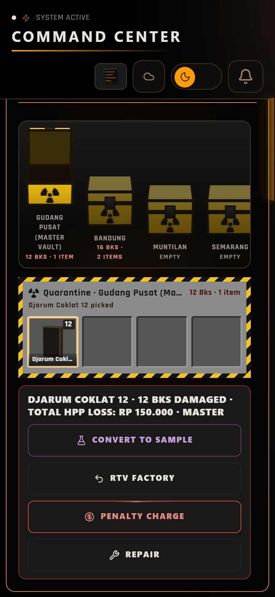
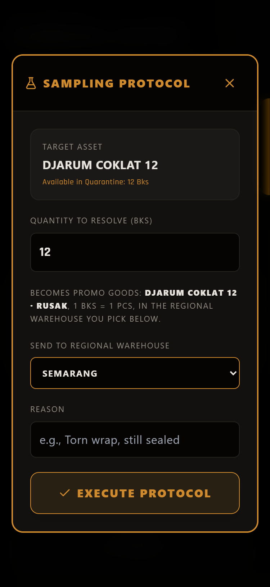
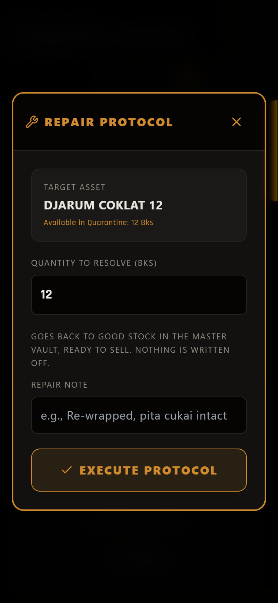
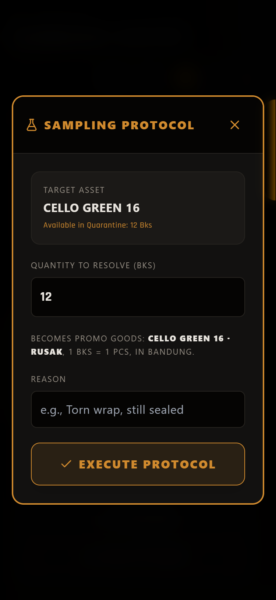

Stock Opname › Quarantine, the boss's screen, phone 375 px. Built in the real code; every press checked in the lab.

Four buttons now: REPAIR is new, only on the Master Vault crate.

You pick the regional warehouse. 5 Bks become "DJARUM COKLAT 12 · RUSAK" 5 pcs in its promo goods.

The packs go back to good stock in the Master Vault, ready to sell. Nothing written off.

No picker: they become promo goods in Bandung itself. No REPAIR here.